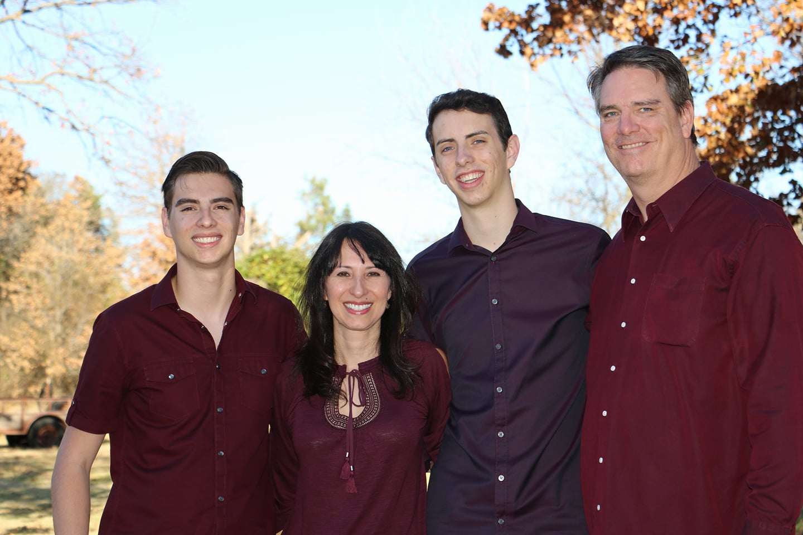

Tristan Partin
Computer Engineer
Texas A&M University
Class of 2019

About
My name is Tristan Partin. I am a senior at Texas A&M University. This upcoming May, I will be graduating with a Bachelor of Science in Computer Engineering, along with Cybersecurity and Math minors.

I am seeking a full time job opportunity starting the summer of 2019. My passions include systems programming, performant computing, and backend web development. In my free time, I like to teach myself new technologies and concepts related to my field. When I am not in front of a computer, I enjoy playing basketball and hanging out with my friends.
Free and open source software is at the center of my computing mindset. I believe it makes the world a much better place. As a contributor to many open source projects, the developers and communities that I have come across have helped me become the developer I am today. To those that contribute to a free and open source world, I raise a glass 🍺.
Experience
National Instruments
Software Engineering Intern
- Synchronized internal times between NI's C-series modules and chassis in order to improve customer experience when receiving data and finding time correlation between modules.

Expero
Junior Software Developer
- Created a PDF microservice using Amazon Web Services S3, Java, and iText7.
- Built a proof of concept ASP.NET Core application using Microsoft's CosmosDB Gremlin API.
Booz Allen Hamilton
Software Engineering Intern
- Worked under the NASA Mission and Program Integration contract for NASA. Translated a SharePoint table of all payloads/systems, hardware configurations, protrusions and overlaps aboard the International Space Station to a relational database using MariaDB.
- Wrote a tool to create, read, update and delete (CRUD) items within the database.
Projects